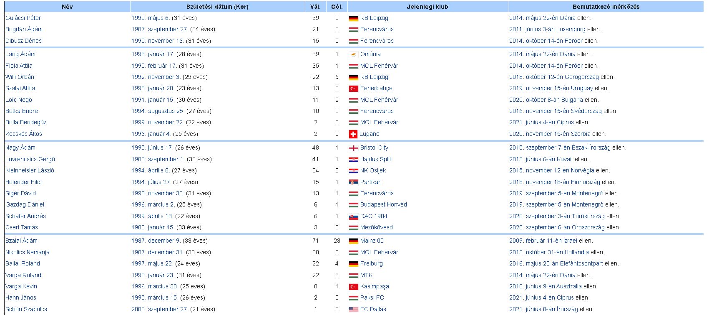

Magyarországon az 1879-ben Molnár Lajos és gr. Esterházy Miksa által írt Athletikai gyakorlatok c. könyv említi meg először a futballt, az "angol rúgósdit". A következő rövid leírását adja ennek a sportágnak. "A football (mondd: futball) vagyis
"rúgdaló", a legrégibb angol játékok egyike és kizárólag az ifjúság, az iskola játéka. Ez az utóbbi körülmény, s az, hogy télen-nyáron s a felszerelés minimumával űzhető, nagyon is alkalmassá teszi e labdajátékot átültetésre idegen talajba,
mit tisztelettel ajánlunk tanügyi köreink figyelmébe."
Magyarországon az első futballmérkőzést 1897. május 9-én játszották le. Ezen a BTC (Budapesti Torna Club) két csapata (a kék-fehérek és a piros-fehérek) küzdöttek egymás ellen, s a mérkőzés végén a kék-fehérek hagyhatták el győztesként a pályát. Ekkor
indult útjára a magyar foci, de ez a jelenleg zajló világbajnokság kapcsán – sajnos – nem volna releváns folytatás...
A Magyar labdarúgó válogatott
Magyar csapat mezek
Játékos keret
A magyar válogatott 26 fős kerete a 2020-as labdarúgó-Európa-bajnokságra. Az adatok a mérkőzések előtti állapotnak megfelelőek.

Bőjátékos keret
A következő játékosok tagjai voltak az elmúlt 12 hónap mérkőzéseire kijelölt kereteknek.